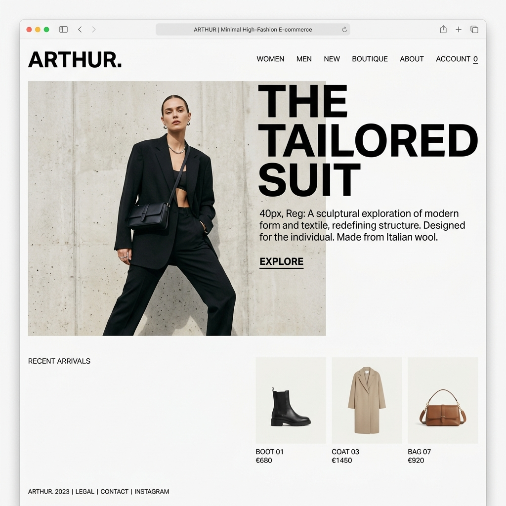

The
Tailored
Suit
A sculptural exploration of modern form and textile, redefining structure. Designed for the individual. Made from Italian wool.

A sculptural exploration of modern form and textile, redefining structure. Designed for the individual. Made from Italian wool.